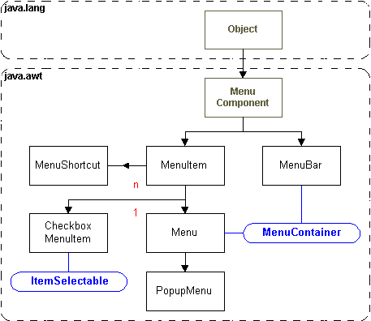

Menu
objects are added to a MenuBar, which
is connected to a Frame with the setMenuBar(mbar)
method. In turn a Menu can contain
other Menus, MenuItems,
CheckboxMenuItems and Separators.

The example code below, shows how to construct
a MenuBar and add Menus
and MenuItems to it.
package frametest;
public class ImageFrame extends Frame {
//Bounds of this Frame
Rectangle rectangle1;
// A Frame has a MenuBar
MenuBar menuBar1 = new MenuBar();
// MenuBar has pull-down Menus
Menu menu1 = new Menu();
// Menus contain MenuItems, CheckboxMenuItems, and other sub Menus>
MenuItem menuItem1 = new MenuItem();
//Construct the Frame
public ImageFrame() {
rectangle1 = this.getBounds();
menuItem1.setLabel("About");
menuItem1.addActionListener(new ImageFrame_menuItem1_actionAdapter(this));
menu1.setLabel("Help");
menu1.add(menuItem1);
menuBar1.add(menu1);
menuBar1.setHelpMenu(menu1);
this.setMenuBar(menuBar1);
}
} |